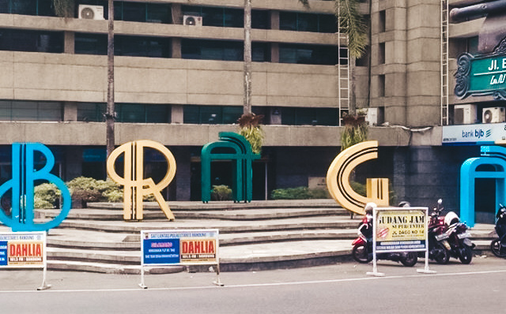
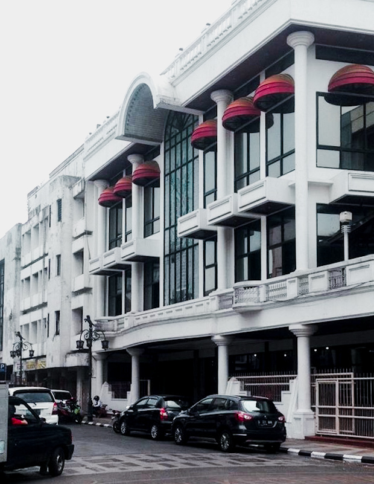

Beberapa waktu yang lalu saya menyempatkan diri jalan-jalan ke Bandung. Alasan kenapa memilih ke Bandung, karena secara jarak dan waktu tempuh dari Jakarta tidak terlalu lama. Jakarta – Bandung dapat ditempuh selama 3 jam menggunakan kereta api. Ngomong – ngomong dahulu Bandung dikenal sebagai Paris van Java karena keindahannya. Selain itu Kota Bandung terkenal dengan factory outlet, kuliner, dan tempat wisatanya yang berlimpah.
Kali ini saya akan menampilkan beberapa area yang wajib dikunjungi, salah satunya di Braga. Braga merupakan salah satu nama jalan di Bandung. Di sepanjang jalan ini kita akan menemui kompleks pertokoan yang masih mempertahankan arsitektur pada masa Hindia Belanda.
 Selain jalan – jalan ke pusat Kota Bandung, saya juga tertarik untuk eksplore ke area Lembang. Cerita selanjutnya dapat dibaca di part 2 yaaa. Thanks for reading.